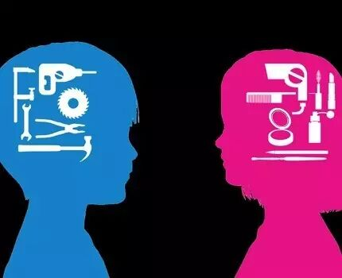

How to be a celebrity?
If you are in Ming dynasty, what you need to do is pretty much. First, staying at a cold window for many years. Then go to the capital city to join an examination. If you do not succeed, you can write a book.
If you are in the 1980s, you can be a movie star. You should look really pretty. The casting director may need some benefits.
If you are in the 1990s, TV becomes so popular. You can be a leading star in a really long TV series, in fact, which is a hard work.
Now, all you need is a phone. Log in weibo, Facebook, Instagram. Make a live show of your life. Suddenly, you become famous.
This new "social network" thing has made tons of information than any other era did. Everyone can be a media. We are so free to get any information we are interested in. We follow those media to catch up everyday updates. We watch their lives. We share their thoughts.It seems that they becomes a part of our life. Do you follow some online celebrities? What's your opinion? Share with us.

This topic is really popular in our club. Men and women are really different especially when they are facing relationship problems. Let's welcome our doctor of psychology to share her opinion.


https://mp.weixin.qq.com/s/EcOooqL-7DNB5-ahtSX0bA
本页为抢救式本地归档，图文已永久保存。